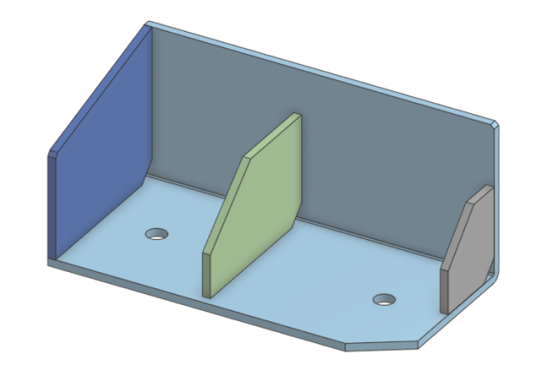
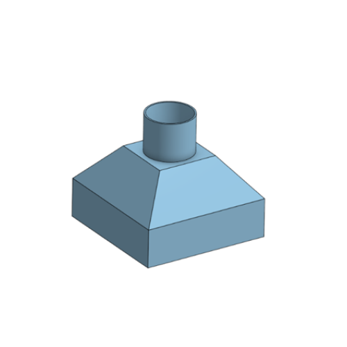
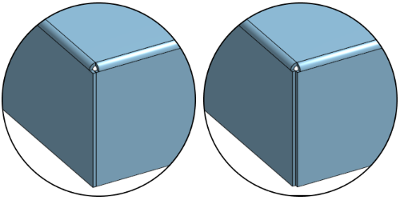
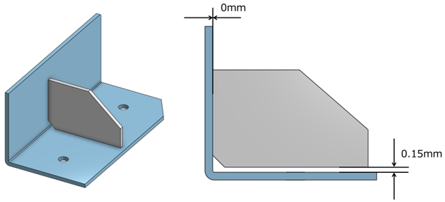
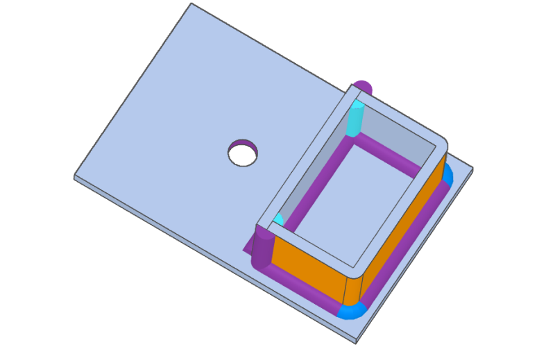
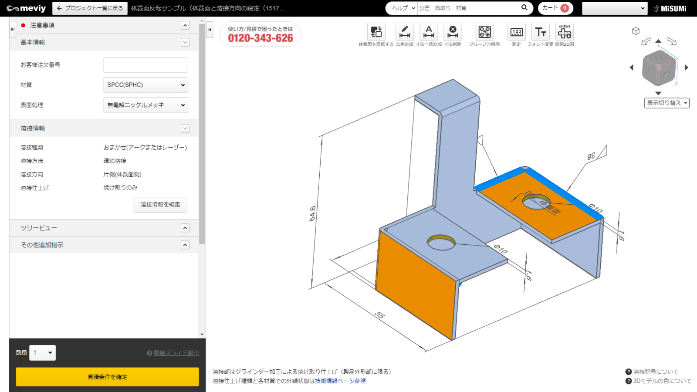
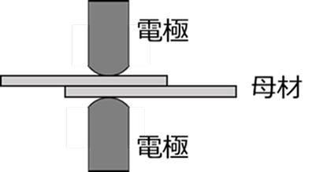
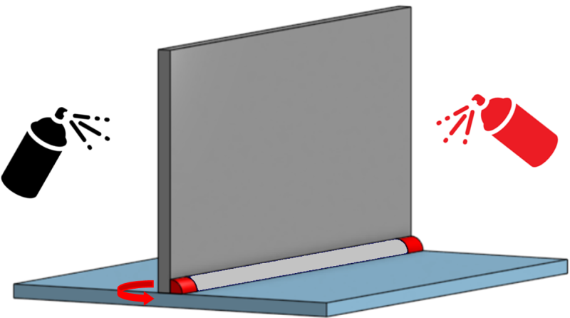

板金溶接
複数の板金パーツを溶接で接合した構造部品を、3Dデータから自動見積もり。 アーク／レーザー／スポット溶接に対応し、リブ・ボックス・アングルなどの溶接構造を最短6日目で出荷します。 コストダウン向けの長納期サービス（30%OFF）も選べます。
概要
meviy板金溶接サービスは、複数の板金パーツを溶接接合した構造部品を3Dデータから自動見積もりします。 3Dデータに溶接ビードを描く必要はなく、自動で認識された溶接箇所に対して3Dビューワー上で溶接情報（種類・方法・方向・仕上げ）を設定します。 見積完了で MVSWD から始まる型番が発行されます。
対応材質・板厚
鉄系・ステンレス・アルミの3系統＋パンチングメタル材に対応。樹脂・切削品は非対応。 〇＝自動見積可能、△＝自動見積不可だが担当者見積は可能。
鉄系
| 材質／表面処理 | 板厚 [mm] | 通常溶接 （アーク/レーザー） | スポット溶接 | 溶接仕上げ |
|---|---|---|---|---|
| SPCC/SPHC（無処理） | 1.0 1.2 1.6 2.0 2.3 3.2 4.5 6.0 | ○ | ○ | 焼け取り／グラインダー（〜3.2mm） |
| SPCC/SPHC＋塗装 | 同上 | ○ | × | グラインダーのみ |
| SPCC/SPHC＋無電解Ni／四三酸化鉄／三価クロメート(白) | 同上 | ○ | ○ | 焼け取り／グラインダー |
| SPCC/SPHC＋三価クロメート(黒) | 同上 | ○ | × | グラインダーのみ |
| SS400（無処理） | 9.0 10.0 12.0 16.0 | ○ | × | 焼け取り／グラインダー |
| SS400＋塗装 | 9.0 10.0 12.0 | ○ | × | グラインダーのみ |
| SS400＋無電解Ni／四三酸化鉄／三価クロメート(白) | 9.0 | ○ | × | 焼け取り／グラインダー |
| SECC（電気亜鉛メッキ鋼板） | 1.0 1.2 1.6 2.0 2.3 3.2 | ○ | × | 焼け取りのみ |
ステンレス
| 材質／仕上げ | 板厚 [mm] | 通常溶接 | スポット溶接 | 溶接仕上げ |
|---|---|---|---|---|
| SUS304（No.1） | 9.0 10.0 12.0 | ○ | ○ | 焼け取りのみ |
| SUS304（2B） | 1.0 1.2 1.5 2.0 2.5 3.0 4.0 5.0 6.0 | ○ | ○ | 焼け取り／グラインダー（〜3.0mm） |
| SUS304（片面#400研磨） | 1.0 1.2 1.5 2.0 3.0 | ○ | ○ | グラインダーは△ |
| SUS304（片面ヘアライン） | 1.0 1.2 1.5 2.0 3.0 | △ | △ | △ |
| SUS430（2B） | 1.0 1.2 1.5 2.0 3.0 | ○ | ○ | 焼け取り／グラインダー |
アルミニウム
| 材質／表面処理 | 板厚 [mm] | 通常溶接 | スポット溶接 | 溶接仕上げ |
|---|---|---|---|---|
| A5052（無処理） | 1.0 1.2 1.5 1.6 2.0 2.5 3.0 4.0 5.0 6.0 | ○ | ○ | 焼け取り／グラインダー（〜2.5mm） |
| A5052＋アルマイト（白／黒） | 同上 | ○ | ○ | グラインダーは△ |
| A5052＋アルマイト（つや消し黒） | 同上 | ○ | ○ | 切り起こし形状は非対応 |
パンチングメタル材（SUS304-BA、丸孔60°千鳥）
| 孔径×孔ピッチ | 開口率 | 板厚 [mm] | 通常溶接 | スポット溶接 |
|---|---|---|---|---|
| ø2×3p | 40.3% | 1.0 | △ | △ |
| ø3×5p | 32.7% | 1.0 1.5 | △ | △ |
| ø5×8p | 35.4% | 1.0 1.5 | △ | △ |
| ø8×12p | 40.2% | 1.5 | △ | △ |
表面処理・塗装色
鉄は溶接焼けで錆びやすいため、防錆を目的に塗装・メッキを推奨します。 表面処理は材質ごとに対応が異なります（上表参照）。
塗装色
粉体塗装7色・溶剤塗装7色の計14色を展開。近似マンセル値・塗料・ツヤは板金部品と同等です。
- 粉体塗装
- ブラック／ホワイト／イエロー／グレー／クリームグレー／オフホワイト／Tクリーム
- 溶剤塗装
- レッド／Nオレンジ／ライトブラウン／スモークブルー／モスグリーン／ライムグリーン／ダークグリーン
- 仕上げ制約
- 塗装品質担保のため、溶接仕上げはグラインダー仕上げのみ利用可。
見積可能サイズ
自動見積可能な製品サイズ範囲は以下の通り。範囲外は担当者見積でご依頼いただけます。 構成パーツ単位で外形寸法（長手方向）の上限があります。
| 材質系統 | 製品外形寸法 （縦＋横＋高さの合計） | 構成パーツ最大辺 | 製品重量 |
|---|---|---|---|
| 鉄系（SPCC/SPHC・SS400・SECC等） | 30〜2000mm ※1 | 〜1200mm | 〜40kg |
| ステンレス系（SUS304・SUS430） | 30〜2000mm | 〜1200mm | 〜40kg |
| アルミ（A5052） | 30〜2000mm ※1 | 〜1200mm | 〜40kg |
※1 表面処理・材質によって縦・横・高さの上限が異なります（別表）。
| 表面処理 | 縦 [mm] | 横 [mm] | 高さ [mm] |
|---|---|---|---|
| 無電解Ni／四三酸化鉄／三価クロメート(白) | 1200 | 800 | 300 |
| 三価クロメート(黒) | 1150 | 900 | 120 |
| A5052（無処理） | 1200 | 920 | 920 |
| アルマイト（白／黒） | 600 | 400 | 400 |
| アルマイト（つや消し黒） | 1100 | 800 | 400 |
対象形状／対象外
見積もり対象形状

溶接対象となる形状要素：板同士のL字接合、板同士のT字接合、板の重ね合わせ （重なり面の外周を溶接。曲げ部がある場合は除く）。
サービス対象外形状

加工が難しい形状（代表例）
設備の加工限界により製作できない場合があり、その際はmeviyサポートより連絡します。
- 幅狭で奥行があり溶接器具が届かない
- 密閉された箱形状
- 溶接部のスリットが開きすぎ
- 曲げ線部に溶接が重なっている（スポット溶接を推奨）
板厚違いの見積可能条件
板厚が2種類以上の部品も見積もり可能。板厚ごとにソリッドを分けてモデリングしてください。
| 板厚の種類数 | 判定 |
|---|---|
| 3種類以内 | ○ 自動見積可能 |
| 5種類以内 | △ 担当者見積可能 |
| 6種類以上 | × 見積不可 |
材質グループを跨いだ異材質の組合せは非対応。自動見積可能な板厚の最小・最大組合せ範囲（代表例）：
| 材質グループ | アーク/レーザー（最小〜最大） | スポット（最小〜最大） | ||
|---|---|---|---|---|
| SPCC/SPHC・SS400 | 1.0〜2.0 | 3.2〜9.0 ／ 9.0〜16.0 | 1.0〜3.2 | 3.2〜3.2 |
| SECC | 1.0〜2.0 | 1.6〜3.2 | 1.0〜3.2 | 3.2〜3.2 |
| SUS304(2B)・SUS304(No.1) | 1.0〜2.0 | 3.0〜6.0 ／ 6.0〜12.0 | 1.0〜3.0 | 3.0〜3.0 |
| SUS304(片面#400研磨) ※ | 1.0〜2.0 | 1.2〜3.0 | － | |
| SUS304(片面ヘアライン) ※ | 1.0〜2.0 | 1.2〜3.0 | － | |
| SUS430(2B) | 1.0〜2.0 | 1.2〜3.0 | 1.0〜3.0 | 2.0〜3.0 |
| A5052 | 1.0〜2.0 | 3.0〜6.0 | 1.0〜2.5 | 2.0〜2.0 |
熱処理
モデリングの基本ルール
板金として展開可能・不可能いずれの場合も板金溶接として見積可能。パーツ構成の条件は以下です。

- 1部品構成：展開できる状態（A）／展開できない状態（B）どちらも可。Bは製作可能な形状（A）に変換（板厚一定のモデルに限る）。
- 2部品以上・板同士の接合：別ソリッドで構成（A）が基本。同一ソリッド（B）は製作可能形状に変換（板厚一定に限る）。
- 2部品以上・板の重ね合わせ：溶接箇所が分割された状態（A）でモデリング。一体化（B）は変換対象外。
3D設計ガイド（対応CAD例）
SOLIDWORKS／iCAD／Inventor等の事例（リブ補強・羽付きボックス）があり、板金コマンドを使わずスケッチと押し出しのみでも設計可能です。 板厚一定の一般的なボックス形状は、シェルで作成したモデルでもmeviy板金溶接が板金形状にリモデルします。 読込可能フォーマットは各CADのネイティブ、Parasolid（.x_t）等。
溶接箇所の判定と認識サイズ
3Dモデルの要素間の距離が0.15mm以内の部位を溶接箇所として判定します。

溶接部として判定される箇所
- 複数ソリッド：ソリッド間距離 0.15mm以下の部位。
- 単一ソリッド：1枚の板金パーツで成立する形状のうち0.15mm以内の隙間がある部位。
- 0.15mm以内のスリットは溶接箇所と判定され、溶接不要の選択は不可。溶接不要なら0.15mmより大きいスリットを追加。
- 板平面の重ね合わせ：重なり部の外周線の溶接、またはスポット溶接として認識。
重ね合わせ板に穴がある場合の溶接判定サイズ
| 穴種 | 溶接部と判定されるサイズ |
|---|---|
| 丸穴 | 板厚3mm未満：ø6以上〜／板厚3mm以上：ø11以上〜 |
| 長穴（先端部） | 板厚3mm未満：ø6以上〜／板厚3mm以上：ø11以上〜 |
| 角穴 | 制限なし |
溶接部として判定されない箇所
- ソリッド間距離が0.15mmより大きい部位。
- 板平面を重ねた溶接部上の曲げ辺（曲げ部の無い辺は認識する）。
- 斜めに配置された2つのソリッド間。
- 曲げの内側などの曲面の接触部（距離に関わらず認識不可）。
溶接困難な箇所の判定

溶接箇所と判定されても、溶接トーチが届かない等で溶接位置の変更が提案される場合があり、その際「品質同意事項」が表示されます。 溶接方向を「両側」から「片側」へ変更して解消するか、同意して見積を行ってください。同意した場合は任意の溶接方法・方向に変更して製作します。
溶接情報の指示と内容
[溶接情報]メニューで溶接種類・方法・方向・仕上げを設定します。指示はすべての溶接箇所に適用されます。
溶接種類
- おまかせ
- アークまたはレーザーで製作。種類は材質・板厚・形状から決定。
- アーク溶接
- TIG・半自動(CO2)等。安価・ビード幅が大きい。熱で歪みやすいが断続溶接で軽減可能。
- レーザー溶接
- ビード幅が小さく熱影響が少ない。隙間埋め・肉盛りには不向き。担当者見積。
- スポット溶接
- 2枚の板を電極で挟み接合。薄板向きで歪みが発生しにくい。2面が重なる部分がある製品で選択可。
溶接方法
- 連続溶接
- 隙間なく連続して溶接。水密性・気密性保持に有効。
- 断続溶接
- 一定間隔をあけて溶接。一辺あたりの溶接長・箇所数を指定（固定値／割合で計算）。熱歪みを低減。
溶接方向

片側（体裁面側）／片側（非体裁面側）／両側から選択。meviyが認識した体裁面は3Dビューワー上で濃いオレンジ色で表示され、パーツごとに反転可能です。
溶接仕上げ
- 焼け取りのみ
- 溶接焼けを除去。方法は材質・表面処理で規定。工具が入らない部分の焼けは残る場合あり。
- グラインダー仕上げ
- 焼け取りに加え溶接ビードを削り周囲面に対し平坦化。対象は製品外形部。
- その他追加指示
- 上記に含まれない仕上げ（例：ヘアライン加工、オイルパンのため水漏れ無き事）は担当者見積。
スポット溶接

溶接情報全体指示欄でスポット溶接にチェックすると、2枚の板平面が重なる箇所（面溶接部）をスポット溶接として見積もります。 重なり面積が小さく1点加工限界を満たせない場合は、当該箇所は通常溶接として見積もります。
- 加工機
- 定置式とテーブル式を製品形状で使い分け（工場決定）。痕の見た目が異なり、テーブル式は平置き面に凹みが出ず、凹み深さはテーブル式が大きい傾向。
- スポット数パターン
- 通常／多め／少なめの3パターンから選択。1面あたりN点の具体的な点数指定や面ごとの指定は担当者見積。
- 自動見積条件
- 面溶接部1面あたり2点以上で自動見積対象。1点のみは条件付き（同一パーツ内、または他に溶接箇所がある等）で自動見積、該当しなければ強度不足懸念で担当者見積。
加工限界の範囲
製品内の溶接部位・構成パーツについて加工可否を判定します。板厚が2種類以上の場合は最も厚い板厚の閾値を製品全体に適用します。
溶接長の最小値（限界値 [mm]）
| 板厚 [mm] | SPCC/SPHC・SS400・SECC | SUS304・SUS430 | A5052 |
|---|---|---|---|
| 1.0 | 1.0 | 3.0 | 5.0 |
| 2.0 | 2.0 | 2.0 | 10.0 |
| 3.2 ／ 3.0 | 3.0 | 3.0 | 10.0 |
| 4.5 ／ 4.0 | 5.0 | 4.0 | 15.0 |
| 6.0 | 9.0 | 9.0 | 20.0 |
| 10.0 | 10.0 | 10.0 | － |
| 16.0 ／ 12.0 | 16.0 | 12.0 | － |
スポット溶接と穴・板端面との最小距離（限界値 [mm]）
| 板厚 [mm] | SPCC/SPHC | SECC | SUS304(2B)/SUS430(2B) | A5052 |
|---|---|---|---|---|
| 1.0 | 5.0 | 10.0 | 6.0 | 8.0 |
| 2.0 | 7.5 | 10.6 | 9.0 | 11.0 |
| 3.2 ／ 3.0 ／ 2.5 | 10.0 | 13.2 | 11.0 | 12.0 |
スポット溶接間の最小距離（限界値 [mm]）
| 板厚 [mm] | SPCC/SPHC・SECC | SUS304(2B)/SUS430(2B) | A5052 |
|---|---|---|---|
| 1.0 | 15.0 | 15.0 | 20.0 |
| 2.0 | 21.0 | 21.0 | 28.0 |
| 3.2 ／ 3.0 ／ 2.5 | 27.0 | 27.0 | 32.0 |
溶接・仕上げ規格
溶接加工基準
- アーク溶接：TIGまたは半自動(CO2)で加工。必要に応じ溶接棒を使用（鉄系3.2mm以上／SUS系4.0mm以上／アルミ2.0mm以上のアーク溶接で使用）。
- レーザー溶接：ファイバーレーザーまたはYAGレーザー（工場判断）。
- 溶接部の脚長（狙い値）：鉄系/SUS系は 参考最小0.7×t1、最大1.5×t2（t1＝薄い板、t2＝厚い板）。A5052は最小3.5mm・最大10mm。
- 強度：製品状態の強度保証はなし。構成パーツが溶接接合されていることを確認のうえ出荷。
仕上げ加工基準
「焼け取りのみ」の方法は材質で異なり、粗いグラインダーかけ（SPCC/SPHC・SECC・A5052）または電解研磨（SUS系）で実施。 SPCC/SPHC・SECC・A5052材は内側に入り込んだ溶接焼けが残ります。 「グラインダー仕上げ」は外側のビードを平坦化（内側は対象外）。ステンレス材は内側の焼けも電解研磨で除去します。
溶接・仕上げ加工後の外観
- スパッタ：除去して出荷。無処理の鉄系・アルミは爪にかからない程度の除去痕が残る場合あり。ステンレスは除去痕を残さず出荷。
- クラック・アンダーカット・オーバーラップ・アークストライク：無きことを確認して出荷。
- スラグ：鉄系厚板の半自動溶接で発生し得る。可能な限り除去するが残る場合あり。スラグ部は表面処理がのりにくい傾向。
- メッキ品の色むら：完全に閉じたボックス隅部で発生する恐れ。付近に通し穴を設けると回避しやすい。
- 仮止め跡：形状により仮止め溶接跡が見える場合あり（機能上問題なし）。
公差・反り歪み
許容寸法公差（溶接加工部）
溶接加工部は JIS B0405 普通許容差の公差等級 C級を適用。基準寸法6以下の区分は6超〜30以下と統一。
| 基準寸法の区分 [mm] | 規格値 |
|---|---|
| 30以下 | ±0.5 |
| 30超 120以下 | ±0.8 |
| 120超 400以下 | ±1.2 |
| 400超 1,000以下 | ±2.0 |
| 1,000超 2,000以下 | ±3.0 |
面取り規格値
- 糸面取り
- 板厚面エッジ部のバリ・カエリを R0.1相当で仕上げ。
- C/R面取り
- 角部C1（30°未満・170°超は対象外）＋板厚面エッジ部 R0.2以上（R0.3相当）。
溶接加工の反り・歪み
著しい反り・歪みはできる限り修正して出荷しますが、完全な除去は保証できません。板金溶接の寸法精度規格から外れる反り残りがある場合は出荷前にmeviyサポートから連絡することがあります。 アーク溶接の連続溶接は反り・歪みが大きくなる傾向があり、レーザー溶接への変更や断続溶接、板平面の重なり部はスポット溶接化で軽減できます。
漏れ試験（漏れなきこと）
[基本情報]メニューで「漏れなきこと」を設定すると、すべての連続溶接箇所で漏れ試験を実施します。 試験は材質・形状によりカラーチェックまたはスヌープ試験を工場で選択（水張り試験は担当者見積）。

| 溶接種類 | 溶接方法 | 漏れ試験 |
|---|---|---|
| おまかせ（アーク/レーザー） | 連続溶接 | ○ |
| おまかせ | 断続溶接 | △ |
| アーク溶接 | 連続溶接 | ○ |
| アーク溶接 | 断続溶接 | △ |
| スポット溶接 | － | ×（試験箇所なし） |
指示可能な材質・表面処理は鉄系・ステンレス・アルミの主要材で〇（SUS304片面ヘアラインは△、パンチングメタルは－）。
保証範囲（漏れなきことの対象）
試験で漏れがなかった製品は浸透液・現像材を拭き取って出荷。形状によりビード上の微小段差に色（赤・白）が残ることがありますが品質に影響はありません。 漏れありと判断した製品は出荷しません。保証規定はMISUMI保証規約に準じます。
付帯サービス
面取り
両面バリ取り機を使用するため体裁面に細かな傷が入る恐れがあります。糸面取りは鉄系・ステンレスで〇（A5052は担当者見積）。 C/R面取りは鉄系（板厚6.0mmは対象外）・SUS系で〇。C/R面取りは長納期対象外（順次対応予定）。
クリーン洗浄
脱脂洗浄／精密洗浄／電解研磨＋精密洗浄の3種に対応。対象サイズは1辺最大1,200mm、製品重量40kgまで（板厚制限なし）。
品質管理
- 外観検査：傷・打痕・ムラ・塗装/表面処理状態・溶接部状態（目視）。
- 寸法確認：3Dビューワー表示の外形・位置寸法（デジタルノギス、角度測定器等）。
- 検査タイミング：各工程および出荷前検査。
- 梱包：ポリエチレン袋・気泡緩衝材・段ボール角当て等。長尺・重量品はパレット別送となる場合あり。
出荷日・納期
締め時間内（20:00）の注文で翌営業日から1日目カウント（土日祝は非カウント）。標準出荷日に加え長納期にも対応します。 自動見積品の標準出荷日（代表例）：
| 材質／表面処理 | 通常溶接（焼け取り） | 通常溶接（グラインダー） | スポットのみ |
|---|---|---|---|
| SPCC/SPHC | 6日目 | 7日目 | 5日目 |
| SPCC/SPHC＋粉体塗装 | － | 9日目 | 7日目 |
| SPCC/SPHC＋無電解Ni／四三酸化鉄／三価クロメート | 8日目 | 9日目 | 7日目 |
| SS400 | 7日目 | 8日目 | － |
| SECC | 6日目 | － | 5日目 |
| SUS304(No.1／2B) | 6日目 | 7日目 | 5日目 |
| SUS430(2B) | 5日目 | 5日目 | － |
| A5052 | 6日目 | 7日目 | 5日目 |
| A5052＋アルマイト | 8日目 | 9日目 | － |
納期選択サービス
| 納期 | 出荷日 | 特長 | 型番末尾 |
|---|---|---|---|
| 標準納期 | 6日目〜 | 最短6日目出荷 | － |
| 長納期 | 20日目〜 | 品質同等・価格30%OFF | -L |